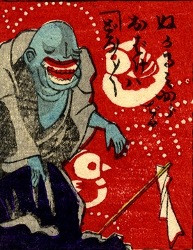

泥の中から出てきた化物。坊主頭で肌が青い。口が大きく、手を前に垂らしている。道着のような服装である。詞書には「ぬかるみから出るお化けは、どろどろ」とある。
著作者：芳幾近二／出典：親書誌：U426_nichibunken_0229：新作おばけ野噺；シンサクオバケノバナシ／日付：2010／資源識別子：U426_nichibunken_0229_0009_0000
Copyright (c)2010- International Research Center for Japanese Studies, Kyoto, Japan. All rights reserved.